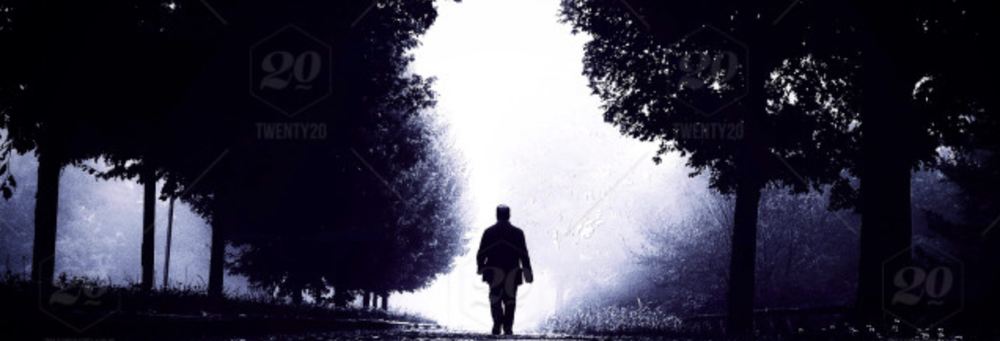

You look around at your living room, and ultimately agree with your friends. This is no substitute for the real expercience of a campfire in the woods while telling stories. The thought of doing that when you're not supposed to might only serve to enhance the expercience. So you leave with your friends to go to city park at night, to find a a campsite, while breaking the rules.
You arrive and park your car near the entrance. You grab a small backpack and a flashlight. You and your friends go to the walking paths that leads to the wooded nature trails.
After walking, talking for a couple of minutes, you hear the shuffle of footsteps behind you. You turn around, and see the dark silouette of a stranger on the path behind you, just standing there still.
